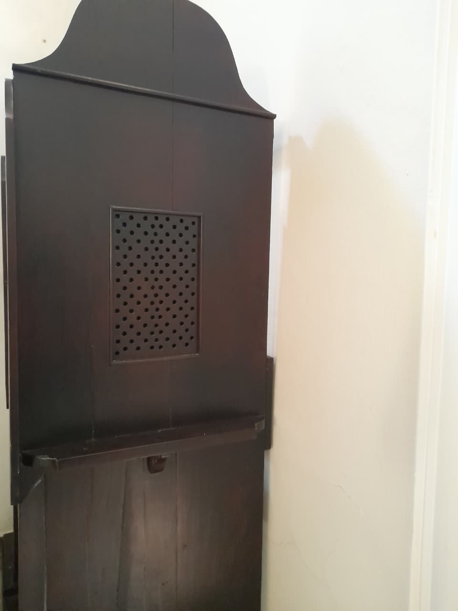

Uma boa confissão
O que é o sacramento da Confissão e por que confessar-se?
A Confissão é um sacramento instituído por Jesus Cristo para perdoar os pecados, quando disse aos seus apóstolos: “Àqueles a quem perdoardes os pecados, ser-lhes-ão perdoados; àqueles a quem os retiverdes, ser-lhes-ão retidos” (Jo 20,23).
“Por meio dos sacramentos da iniciação cristã, o homem recebe a vida nova de Cristo. Agora, porém, essa vida trazemos em vasos de argila, continuamos expostos ao sofrimento, à doença e à influência do pecado. O Senhor Jesus Cristo quis que a Sua Igreja continuasse, na força do Espírito Santo, a Sua obra de cura e de salvação também entre os Seus próprios membros. É particularmente por meio do sacramento da Reconciliação que Ele nos liberta do pecado e nos fortalece para o serviço da comunidade na Igreja. A reconciliação com Deus traz consigo a verdadeira vida.” (CIC, 1420)
“Cristo instituiu o sacramento da Penitência para todos os membros pecadores de sua Igreja, em primeiro lugar para os que, desde o Batismo, caíram em pecado grave e assim perderam a graça batismal e feriram a comunhão eclesial. É a eles que o sacramento da Penitência oferece uma nova possibilidade de se converterem e de recuperarem a graça da justificação. Os Padres da Igreja apresentam este sacramento como «o segundo Batismo, um Batismo de lágrimas».” (CIC, 1446).
O que é o pecado?
O pecado é uma falta contra a razão, a verdade, a reta consciência. É uma falha contra o verdadeiro amor para com Deus e para com o próximo, por causa de um apego perverso a certos bens. Fere a natureza do homem e atenta contra a solidariedade humana (CIC, 1849). Santo Agostinho definiu-o como “o amor de si próprio levado até ao desprezo de Deus”. Por essa exaltação orgulhosa de si, o pecado é diametralmente oposto à obediência de Jesus que realiza a salvação (cf. Fl 2,6-9).
Os pecados distinguem-se segundo a sua gravidade em mortais e veniais (CIC, 1852). O pecado mortal destrói a caridade no coração do homem por uma infração grave à Lei de Deus. Desvia o homem de Deus, que é o seu último fim, à sua bem-aventurança, preferindo-lhe um bem inferior. O pecado venial deixa subsistir a caridade, embora a ofendendo e ferindo-a.
Para que um pecado seja mortal requerem-se, em simultâneo, três condições: “É pecado mortal o que tem por objeto uma matéria grave, e é cometido com plena consciência e de propósito deliberado.” (CIC, 1857).
A matéria grave é precisada pelos Dez mandamentos segundo a resposta que Jesus deu ao jovem rico: “Não mates; não cometas adultério; não furtes; não levantes falsos testemunhos; não cometas fraudes; honra teu pai e tua mãe” (Mc 10,18) (CIC, 1858).
Comete-se um pecado venial quando, em matéria leve, não se observa a medida prescrita pela lei moral ou quando, em matéria grave, se desobedece à lei moral, mas sem pleno conhecimento ou sem total consentimento. O pecado venial enfraquece a caridade, traduz um afeto desordenado aos bens criados, impede o progresso da pessoa no exercício das virtudes e na prática do bem moral; e merece penas temporais. O pecado venial deliberado e não seguido de arrependimento, dispõe, a pouco e pouco, para cometer o pecado mortal.
“A contrição é a ‘dor da alma e detestação pelo pecado cometido, com o propósito de não voltar a pecar no futuro.’” (Concílio de Trento – DS 1676).
Pela confissão ou acusação o homem confronta-se com os pecados de que se sente culpado, assume a sua responsabilidade e por isso abre-se de novo a Deus e à comunhão com a Igreja. Devem-se enumerar todos os pecados mortais de que se tem consciência depois de se ter examinado com seriedade, inclusivamente se esses pecados são muito secretos, pois por vezes esses pecados ferem mais gravemente a alma e são mais perigosos que os que se cometeram à vista de todos.
A confissão de todos os pecados cometidos manifesta a verdadeira contrição e o desejo da misericórdia divina. É como quando o doente mostra a sua chaga ao médico para ser curado.
A satisfação ou penitência. Se os pecados causam dano ao próximo, é preciso fazer o possível para repará-lo (por exemplo, restituir as coisas roubadas, restabelecer a reputação do que foi caluniado, compensar as feridas). A justiça é isto que exige. Mas além disso o pecado fere e debilita o próprio pecador, assim como a sua relação com Deus e com o próximo. A absolvição tira o pecado, mas não remedeia todas as desordens que o pecado causou. Libertado do pecado, o pecador deve ainda recobrar a plena saúde espiritual. Portanto, deve fazer algo mais para reparar os seus pecados: deve “satisfazer” de maneira apropriada ou “expiar” os seus pecados do modo que o confessor indicar.
Porque a vida nova que nos foi dada por Ele no batismo pode debilitar-se e perder-se por causa do pecado. Por isso, Cristo quis que a Igreja continuasse a sua obra de cura e de salvação mediante este sacramento.

Absolvição sacramental
Pela absolvição sacramental do sacerdote, que atua em nome de Cristo, Deus concede ao penitente o perdão e a paz, recupera a graça pela qual vive como filho de Deus e pode chegar ao céu, a felicidade eterna.
Referência: Diário Quaresmal 2026 - Instituto Hesed
Como fazer o exame de consciência? (Com base nos 10 mandamentos)
1º MANDAMENTO: Amar a Deus sobre todas as coisas
"Jesus resumiu os deveres do homem para com Deus nestas palavras: «Amarás o Senhor teu Deus com todo o teu coração, com toda a tua alma, com toda a tua mente» (Mt 22, 37) (1). Elas são um eco imediato do apelo solene: «Escuta, Israel: o Senhor nosso Deus é o único» (Dt 6, 4). Deus foi o primeiro a amar. O amor do Deus único é lembrado na primeira das «dez palavras». Em seguida, os mandamentos explicitam a resposta de amor que o homem é chamado a dar ao seu Deus." (CIC 2083).
2º MANDAMENTO: Não tomar o Seu santo nome em vão
"Entre todas as palavras da Revelação, há uma, singular, que é a revelação do nome de Deus. Deus confia o seu nome aos que crêem n'Ele; revela-se-lhes no seu mistério pessoal. O dom do nome é da ordem da confidência e da intimidade. «O nome do Senhor é Santo»; por isso, o homem não pode abusar dele. Deve guardá-lo na memória, num silêncio de adoração amorosa (68). E não o empregará nas suas próprias palavras senão para o bendizer, louvar e glorificar (69)." (CIC 2143).
3º MANDAMENTO: Guardar domingos e festas
"O mandamento da Igreja determina e precisa a lei do Senhor: «No domingo e nos outros dias festivos de preceito, os fiéis têm obrigação de participar na missa» (102). «Cumpre o preceito de participar na missa quem a ela assiste onde quer que se celebre em rito católico, quer no próprio dia festivo quer na tarde do antecedente» (103)." (CIC 2180).
4º MANDAMENTO: Honrar pai e mãe
"O quarto mandamento é o primeiro da segunda tábua, e indica a ordem da caridade. Deus quis que, depois de Si, honrássemos os nossos pais, a quem devemos a vida e que nos transmitiram o conhecimento de Deus. Temos obrigação de honrar e respeitar todos aqueles que Deus, para nosso bem, revestiu da sua autoridade." (CIC 2197).
5º MANDAMENTO: Não matar
" «A vida humana é sagrada porque, desde a sua origem, postula a acção criadora de Deus e mantém-se para sempre numa relação especial com o Criador, seu único fim. Só Deus é senhor da vida, desde o seu começo até ao seu termo: ninguém, em circunstância alguma, pode reivindicar o direito de dar a morte directamente a um ser humano inocente» (33)." (CIC 2258).
6º MANDAMENTO: Não pecar contra a castidade
"A castidade significa a integração conseguida da sexualidade na pessoa, e daí a unidade interior do homem no seu ser corporal e espiritual. A sexualidade, na qual se exprime a pertença do homem ao mundo corporal e biológico, torna-se pessoal e verdadeiramente humana quando integrada na relação de pessoa a pessoa, no dom mútuo total e temporalmente ilimitado, do homem e da mulher. A virtude da castidade engloba, portanto, a integridade da pessoa e a integralidade da doação." (CIC 2337).
7º MANDAMENTO: Não furtar
" O sétimo mandamento proíbe tomar ou reter injustamente o bem do próximo e prejudicá-lo nos seus bens, seja como for. Prescreve a justiça e a caridade na gestão dos bens terrenos e do fruto do trabalho dos homens. Exige, em vista do bem comum, o respeito pelo destino universal dos bens e pelo direito à propriedade privada. A vida cristã esforça-se por ordenar para Deus e para a caridade fraterna os bens deste mundo." (CIC 2401).
8º MANDAMENTO: Não levantar falso testemunho
"O oitavo mandamento proíbe falsificar a verdade nas relações com outrem. Esta prescrição moral decorre da vocação do povo santo para ser testemunha do seu Deus, que é e que quer a verdade. As ofensas à verdade exprimem, por palavras ou por actos, a recusa em empenhar-se na rectidão moral: são infidelidades graves para com Deus e, nesse sentido, minam os alicerces da Aliança." (CIC 2464).
9º MANDAMENTO: Não desejar a mulher do próximo
"A pureza exige o pudor. O pudor é parte integrante da temperança. O pudor preserva a intimidade da pessoa. Designa a recusa de mostrar o que deve ficar oculto. Ordena-se à castidade e comprova-lhe a delicadeza. Orienta os olhares e as atitudes em conformidade com a dignidade das pessoas e com a união que existe entre elas." (CIC 2521).
10º MANDAMENTO: Não cobiçar as coisas alheias
"O décimo mandamento condena a avidez e o desejo duma apropriação desmesurada dos bens terrenos; e proíbe a cupidez desregrada, nascida da paixão imoderada das riquezas e do seu poder. Interdita também o desejo de cometer uma injustiça pela qual se prejudicaria o próximo nos seus bens temporais: «Quando a Lei nos diz: "Não cobiçarás", diz-nos, por outras palavras, que afastemos os nossos desejos de tudo o que não nos pertence. Porque a sede da cobiça dos bens alheios é imensa, infindável e insaciável, conforme está escrito: "O avarento nunca se fartará de dinheiro" (Sir 5, 9)» (269). (CIC 2536).
Referências:
Catecismo da Igreja Católica (https://www.vatican.va/
archive/cathechism_
po/index_new/prima-pagina-cic_po.html)
Site Padre Paulo Ricardo (https://www.padrepauloricardo.org/)
Santidade.Net (https://www.santidade.net/)